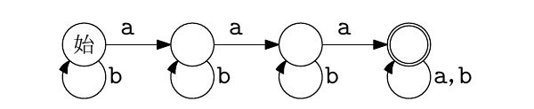

7月27日（木）4限｜大問3（うち大問3は選択）
次の文章の空欄に、それぞれ「アナログ」または「ディジタル」のいずれかを入れよ。
(1) 我々が自然界で見たり聞いたりするもの、たとえば物体の色や音の大きさなどは、連続的な値をもつものが多い。このような連続量で情報を表すことを1A表現と呼ぶ。これに対して、値をある一定の間隔の尺度の値に近似して離散的に表すことを1B表現という。
(2) 2A表現で表されたデータの複製はもとのデータの近似にしかなりえず、データの劣化を避けることができない。これに対して、2B表現は精度が有限で近接する量と明確に区別できるため、複製時にデータが劣化しにくい。
(3) 音声、写真、映像などの記録は、かつてはレコードまたはオーディオテープ、ネガフィルム、ビデオテープなどの、3A表現をそのまま保持する記録媒体を用いて行われてきたが、CD、DVDなどの、3B表現を保持する記録媒体に取って代られるようになった。
いずれの文も「連続量そのまま＝アナログ」「離散的な値に近似・区別可能＝ディジタル」という対比になっている。
1A=アナログ／1B=ディジタル
2A=アナログ／2B=ディジタル
3A=アナログ／3B=ディジタル
次の文章の空欄を埋めよ。
ユーザインタフェースには、大きく分けて、CUIとGUIの2種類がある。CUIでは、ユーザに対する情報の表示は4によって行なわれ、入力デバイスとして主に5が用いられる。それに対してGUIでは、情報の表示をグラフィックなオブジェクトにより視覚的に行ない、マウスなどの6デバイスを用いて、それらのオブジェクトを直接的に操作する。GUIでは7メタファが広く採用されている。これは初心者ユーザにとっても違和感なく操作ができるように現実世界を摸したインタフェースであり、書類や文房具などとの類推により目的の操作を達成することを目指している。
CUI（Character User Interface／Command-line User Interface）は文字の入出力のみでやり取りするインタフェース、GUI（Graphical User Interface）はアイコンやウィンドウなどグラフィックなオブジェクトを直接操作するインタフェースである。GUIで広く使われる「オフィスの机の上」を模したメタファが7=デスクトップメタファであり、ファイルを「文書」アイコン、削除操作を「ごみ箱」に見立てるなど、現実世界の道具との類推でユーザの理解を助ける。
AさんとBさんがある競技で勝負をする。二人の実力は互角で、競技の性質上、先攻が3/4、後攻が1/4の確率で勝利する。引き分けはない。これに関して、以下の問いに小数点以下2桁で答えよ。必要ならば$\log_2 3\approx1.58$、$\log_2 5\approx2.32$、$\log_2 7\approx2.81$を用いても良い。
(1) Aさんが先攻、Bさんが後攻であると知っているとき、「Aさんが勝った」という情報がもつ情報量を求めよ。
(2) Aさんが先攻、Bさんが後攻であると知っているとき、対戦結果がもつ平均情報量を求めよ。
(3) Aさんが先攻となる確率が1/2であるとき、「Aさんが勝った」という情報がもつ情報量を求めよ。
ある事象が起こったという情報の情報量は、その事象の確率$p$を用いて$-\log_2 p$で定義される。確率が小さい（意外な）事象ほど情報量は大きくなる。
(1) Aが先攻と分かっているとき、$P(\text{Aが勝つ})=3/4$。よって情報量は $$-\log_2\frac{3}{4}=\log_2\frac{4}{3}=\log_2 4-\log_2 3=2-1.58=\mathbf{0.42}\ \text{ビット}$$
(2) 対戦結果は「A勝ち」（確率$p=3/4$）と「B勝ち」（確率$q=1/4$）の2通りである。平均情報量（エントロピー）は $$H=-\left(\frac34\log_2\frac34+\frac14\log_2\frac14\right)=\frac34\times0.42+\frac14\times2=0.315+0.5=0.815\approx\mathbf{0.82}\ \text{ビット}$$ （厳密には0.815ビットだが、小数点以下2桁で四捨五入して0.82とする。）
(3) 先攻・後攻の割り当てが$1/2$ずつランダムに決まるとすると、Aが先攻になる確率も後攻になる確率も$1/2$である。全体としてAが勝つ確率は、先攻・後攻それぞれの場合に分けて計算できる（全確率の法則）： $$P(\text{Aが勝つ})=P(\text{A先攻})P(\text{Aが勝つ}\mid\text{A先攻})+P(\text{A後攻})P(\text{Aが勝つ}\mid\text{A後攻})=\frac12\times\frac34+\frac12\times\frac14=\frac38+\frac18=\frac12$$ 先攻優位（3/4 vs 1/4）が、先攻・後攻の割り当ての対称性によってちょうど打ち消され、Aが勝つ確率はぴったり$1/2$になる。よって情報量は $$-\log_2\frac12=\mathbf{1.00}\ \text{ビット}$$
(1)や(2)の答えが小数で割り切れないのに対し、(3)だけがちょうど1ビットになるのは偶然ではない。先攻・後攻の割り当てそのものを確率$1/2$ずつのランダムな事象にしてしまうと、「Aが先攻で勝つ」経路と「Aが後攻で勝つ」経路の非対称性（3/4 vs 1/4）が、割り当ての対称性（1/2 vs 1/2）によって打ち消され、結果としてAとBはどちらも対等な確率$1/2$で勝つ、というきれいな構造に帰着する。1ビットは「等確率で2通りの結果がありうる事象」の情報量の基準値であり、コインの表裏を当てる情報量に等しい。ここでは「先攻・後攻をランダムにする」という一段階の対称化操作が、A・B間の実力差（正確には制度上の有利・不利の差）をちょうど打ち消して、公平な1ビットのくじに変換していると理解できる。
正方形のマス目からなる方眼紙の罫線に沿って、まっすぐに切断する操作を繰り返して、方眼紙を細かな紙片に分割したい。複数枚の紙片（異なる大きさでも構わない）を重ね、まとめて切断することは許されており、これを1回の切断として数える。なお、紙片を折ることは許されないものとして、以下の問いに答えよ。
(1) 方眼紙1枚を罫線に沿って3回切断することで分割できる最多の紙片数は何枚か？
(2) 方眼紙全体が縦横$2^m\times2^n$の正方形のマス目からなるとき、この方眼紙1枚を$2^m\times2^n$個の正方形の紙片に分割するために、切断回数を最少とする手順について説明しなさい。
(3) (2)の手順で必要とされる切断操作の回数を求めなさい。
(1) 「重ねてまとめて切ってよい」というルールのポイントは、1回の切断でその時点に存在するすべての紙片を1本の直線でまとめて切ることができれば、紙片の枚数を最大2倍にできることである。具体的には、すべての紙片をぴったり重ねて1枚の束にし、その束の真ん中を一直線に切れば、束の中の紙片すべてが同時に2つに分かれ、枚数は倍になる。1枚から始めて3回この操作を繰り返せば、枚数は$1\to2\to4\to8$と増える。よって最多で$2^3=\mathbf{8}$枚。
(2) 縦方向・横方向それぞれに、上記のような「重ねて倍増させる」ダブリング戦略を用いる。 まず縦方向について、方眼紙をちょうど半分に切って幅の等しい2枚の帯を作る。この2枚を重ねて、また真ん中で半分に切ると4枚の帯になる。これを合計$m$回繰り返すと、縦方向に$2^m$本の帯（それぞれ幅1マス、高さ$2^n$マス）が得られる。 次に、この$2^m$枚の帯をすべて重ね合わせて1つの束にし、今度は横方向について同じダブリング戦略を$n$回繰り返す。束ねられているすべての帯が同時に横方向にも分割されていくので、最終的に$2^m\times2^n$個の単位正方形の紙片が得られる。
(3) 縦方向の$m$回＋横方向の$n$回で、合計$\mathbf{m+n}$回。1回の切断で紙片の枚数は最大でも2倍にしかならないため、$2^{m+n}$個の紙片を作るには少なくとも$\log_2(2^{m+n})=m+n$回の切断が必要であり((1)の考察の一般化)、(2)の手順はちょうどこの下限を実現しているので最少である。
正負ないしゼロの整数$n$が与えられた際に、$n$が偶数か奇数かを判定するプログラムを考える。次の条件に沿ったプログラムの空欄を、教科書の記法を用いて埋めよ。またプログラムのアルゴリズムについて、わかりやすく説明すること。
・$n$が偶数の場合は解を1とし、奇数の場合は解を$-1$とする。
・配列、下記にない演算子（たとえば、除算、剰余、冪乗、ビット演算など）は使用できない。
（使える記法：変数、代入(←)、整数、加算・減算・乗算(+,−,×)、括弧、等号・不等号(=,<,>)、解の指定(return)、反復処理(while...do...done)、条件処理(if...then...endif)）
まず最初のif文で、$n$が負の場合は$n$を正に変換しておく（8=n<0のとき9=−nとする）。偶奇の判定結果は$n$の符号に依らないため、絶対値に直しても最終的な答えは変わらない。この前処理が必要な理由は、$n$が負のまま後続のwhileループに入ると、「$n\leftarrow n-1$」によって$n$がどんどん小さく（負の方向に大きく）なり続けてしまい、ループがいつまでも終了条件を満たさず無限に繰り返されてしまうためである。
その後、$p$を1で初期化し、10=n>0を条件とするwhileループに入る。このループは$n$を1ずつ減らしながら、そのたびに$p$の符号を反転させる（$p\leftarrow p\times(-1)$）という操作を、$n$が0になるまで繰り返す。したがってループの実行回数は（変換後の）$n$の値そのものに等しく、$p$の符号はその回数だけ反転する。反転を偶数回行えば$p=1$のまま、奇数回行えば$p=-1$になるので、最終的な$p$の符号は「$n$の絶対値が偶数か奇数か」と一致する。ループを抜けたら、そのままreturnで$p$を解として返す。
具体例で確認すると、$n=4$のとき：if文の条件は偽（変換なし）、$p=1$から始めてループを4回実行（符号反転4回）すると$p=1$のまま終了。$n=3$のとき：ループを3回実行（符号反転3回）すると$p=-1$で終了。$n=0$のとき：ループを0回実行（一度も反転せず）$p=1$のまま終了。$n=-3$のとき：まずif文で$n\leftarrow 3$に変換され、以降は$n=3$の場合と全く同じ動作になり$p=-1$で終了する。いずれも偶数なら$p=1$、奇数なら$p=-1$という設計どおりの結果が得られている。
この問2-2のアルゴリズムは、剰余演算（$n\bmod 2$）を使わずに偶奇を判定する典型的な工夫である。「1回の操作ごとに状態を反転させ、反転の回数の偶奇で最終状態が決まる」という考え方は、有限状態機械における状態遷移や、大問3の問題Bで出てくる「aの出現回数を状態番号として数える」オートマトンとも本質的に同じ構造を持っている――どちらも「離散的な操作の繰り返し回数」を、明示的な除算や剰余を使わずに、状態（この問題では変数$p$の符号）の変化として追跡する点で共通している。また問2-1のダブリング戦略と本問のカウントダウン戦略は対照的で、前者は「1回の操作で対象を倍増させる」ことで少ない手数を実現するのに対し、後者は「1回の操作で1ずつ確実に進める」ことで、単純な演算だけで正確な判定を行っている。
問題A・Bのいずれか一方を選択。ここでは両方を掲載する。
(1) 機密性、完全性、使用可能性の3つの概念について、それぞれ一行程度で説明せよ。
(2) 不正アクセス禁止法の主な内容を3点挙げよ。
(3) 不正アクセス禁止法が(1)の3つの概念とどのように関係するか、どれか1つの概念を取り上げ、その概念との関係性を述べよ。
(1) 機密性（Confidentiality）：許可された者だけが情報にアクセスできること。完全性（Integrity）：情報が改ざん・破壊されず正確な状態にあること。使用可能性（Availability）：必要なときに正当な利用者が支障なく利用できること。
(2) ①他人のID・パスワード等の識別符号を無断で使用し、アクセス制御機能を回避してコンピュータを利用可能にする「不正アクセス行為」の禁止。②他人の識別符号を不正に取得・保管・提供する行為の禁止。③アクセス制御機能を回避するための情報・手段を提供する行為の禁止、および都道府県公安委員会による助言・指導などの再発防止措置。
(3) 例えば「機密性」を取り上げると、不正アクセス禁止法はアクセス制御機能によって保護されている情報への無許可のアクセスを禁じることで、「許可された者だけがアクセスできる」という機密性を法的な観点から保護している。
(1) 教科書からの抜粋（大津市中2いじめ自殺事件の報道記事、下線部「地域の権力構造をひっくり返す」を含む）を読み、下線部の意味を説明せよ。そのうえで、この炎上事例においてインターネットのもつ匿名性が果たした役割について説明せよ。
(2) 2017年4月にユナイテッド航空が定員超過対処のため乗客を強制的に降機させた事件（動画がSNSに投稿され炎上）が広く知られることになった過程に、SNSをはじめとする情報技術の特徴がどのような影響を与えているか。「グローバルな多対多の通信射程」と「複製可能性」の2つの側面から述べよ。
(1) 通常であれば、大津市という一地域内の権力関係（学校・教育委員会・警察等が結束して情報公開や捜査を抑え込める力関係）によって、いじめの調査結果の公表や捜査が「揉み消され」得たはずだった。しかしインターネットを通じた情報の拡散によって、地域外・全国からの注目と圧力が生まれ、地域内部だけでは制御できない力学に転換したことを「地域の権力構造をひっくり返す」と表現している。匿名性の役割としては、情報を発信・共有した人々が地域社会内での報復や身元特定を恐れず声を上げられたのは匿名性によるところが大きく、地域内の権力構造に直接晒されることなく情報を全国に拡散できたことが、この「ひっくり返す」力の源泉になった。
(2) 「グローバルな多対多の通信射程」により、乗客が撮影した動画は特定の地域やマスメディアの取材・編集を介さず、SNSを通じて世界中の不特定多数に直接・同時に拡散され、一つの空港内で起きた出来事が瞬時に国際的な話題になった。「複製可能性」により、動画はデジタルデータとして劣化なく無数に複製・再共有され、拡散を止めることが事実上不可能になり、消えない記録として世界中に残り続けたことが、炎上の規模と持続性を拡大させた。
問題A-2で扱われている「グローバルな多対多の通信射程」と「複製可能性」は、インターネット以前のマスメディア（新聞・テレビ）による情報伝達とSNSによる情報伝達を対比するときの重要な視点である。マスメディアは基本的に「少数の発信者から多数の受信者へ」という一対多の構造で、編集・検閲というフィルタを経て情報が伝わるのに対し、SNSは誰もが発信者になれる多対多の構造であり、情報が編集を経ずに（時に文脈を欠いたまま）拡散する。またディジタル情報は問1-1で見たように複製時の劣化がないため、一度拡散した情報は完全な形で無数に残り続け、消去や訂正が事実上不可能になる——この「一度出た情報は消えない」という性質が、炎上が短期間で沈静化しにくい一因になっている。
aとbの2種類の文字からなる文字列を受け取って、その性質を判定する有限状態機械を考える。図1は、そのような有限状態機械の一例である。

図1に示す有限状態機械の場合、状態が4個あり、それぞれからaと記された矢印とbと記された矢印が1本ずつ出ている（右端の「a,b」は、aとbの2本の矢印をまとめて記したものである）。機械は「始」と記された状態から動作を始め、文字列を左から1文字ずつ読み進めながら、現在の文字に従って矢印を辿り次の状態に移ることを繰返す。文字列を読み終えたときに二重丸のついた状態（受理状態）にあればその文字列は受理されたといい、ついていない状態にあれば拒否されたという。図1の機械は受理状態を1個しかもたないが、複数もつ機械もある。
(1) 次の文字列のうち図1の機械が受理するものには○を、拒否するものには×を記せ。①aaa ②bbbb ③aba ④ababa
機械が文字列の性質Lを判定するとは、Lを満す文字列をすべて受理し、Lを満さない文字列をすべて拒否することをいう。
(2) ある人は図1の機械が次の性質アを判定すると主張している。
性質ア：文字列に文字aが現れる回数がちょうど3回である。
この主張が誤りであることを、判定が合わなくなる文字列の例を挙げて示せ。
(3) 実際に図1の機械はどのような性質を判定しているか説明せよ。
(4) 図1の機械を修正し、性質アを判定するようにせよ。機械の状態は5個とする。
(5) 次の各性質を判定する有限状態機械（それぞれ状態は4個、5個、8個とする）を作れ。
性質イ：文字列に文字aが連続して3個以上現れることがある。
性質ウ：文字列全体の長さが3文字以上であり、左端から3文字目はaである。
性質エ：文字列全体の長さが3文字以上であり、右端から3文字目はaである。
図1の機械の構造を状態遷移として整理すると、状態1（始状態、bで自己ループ）─a→ 状態2（bで自己ループ）─a→ 状態3（bで自己ループ）─a→ 状態4（受理状態＝二重丸、a・bどちらでも自己ループ）となっている。つまりこの機械は「aが何回現れたか」を状態1〜4によって0回・1回・2回・3回以上、と数えており、3回目のaを読んだ時点で状態4（受理状態）に到達し、それ以降は4回目以降のaが来ても、bが何個来ても、状態4の自己ループによって永久に受理状態にとどまり続ける。
(1)
① aaa：a,a,aと読むごとに状態1→2→3→4へ進む。読み終えた時点で状態4（受理状態）にいるので○（受理）。
② bbbb：aが一度も現れないので、状態1にbの自己ループでとどまり続ける。状態1は受理状態でないので×（拒否）。
③ aba：a→状態2、b→状態2（自己ループ）、a→状態3。読み終えた時点で状態3にいる。状態3は受理状態でないので×（拒否）。
④ ababa：a→状態2、b→状態2、a→状態3、b→状態3、a→状態4。読み終えた時点で状態4（受理状態）にいるので○（受理）。
(2) 反例としてaaaa（aがちょうど4回現れる文字列）を考える。図1の機械にこの文字列を与えると、3文字目のaで状態4（受理状態）に到達し、4文字目のaも状態4の自己ループでそのまま処理されるため、読み終えた時点でも状態4＝受理状態にとどまり、機械はこの文字列を受理する。しかし性質アは「aの出現回数がちょうど3回」であることを要求しており、aaaaはaが4回現れるためこの性質を満たさないはずである。すなわち、機械の判定（受理）と性質アに基づく判定（本来は拒否されるべき）が一致しないので、「図1の機械が性質アを判定する」という主張は誤りである。
(3) 図1の機械が実際に判定しているのは、「文字列にaが3回以上現れる」という性質である。一度3回目のaによって受理状態（状態4）に達すると、その後何が来ても状態4から抜け出せない（吸収状態になっている）ため、「aの出現回数がちょうど3」ではなく「aの出現回数が3以上」という、下限だけを課す性質になっている。
(4) 性質アを判定するには、3回目のaに到達した後に4回目のaが来た場合に、受理状態から脱落させる仕組みを追加する必要がある。具体的には、状態4（受理状態）の自己ループをbのみに限定し、状態4でaを読んだ場合には新たに追加する状態5（非受理の「わな」状態）へ遷移させ、状態5ではa・bどちらが来ても状態5に留まり続けるようにする。まとめると：状態1（始状態、bで自己ループ）─a→ 状態2（bで自己ループ）─a→ 状態3（bで自己ループ）─a→ 状態4（受理状態、bでのみ自己ループ）─a→ 状態5（非受理のわな状態、a・bどちらでも自己ループ）。これにより、aがちょうど3回現れて読み終えた場合のみ状態4に留まって受理され、4回目以降のaが来ると状態5に落ちて拒否されるようになる。状態数は合計5個。
(5)
性質イ（aが3個以上連続して現れることがある）：連続するaの個数を0,1,2,3以上の4段階で数える機械を作る。状態0（連続a=0個、始状態。bで状態0に戻る自己ループ、aで状態1へ）─a→ 状態1（連続a=1個。bで状態0に戻る、aで状態2へ）─a→ 状態2（連続a=2個。bで状態0に戻る、aで状態3へ）─a→ 状態3（性質が成立した後の受理・わな状態。a・bどちらでも自己ループし、一度到達すれば以降永久に受理状態のまま）。連続する非aの文字（b）が来ると連続カウントは0にリセットされ、aが3個続けて現れた時点で状態3に落ちて、それ以降は何が来ても受理され続ける。状態数は合計4個。
性質ウ（長さ3文字以上かつ左端から3文字目がa）：この性質を判定するには、文字列の最初の3文字だけを見ればよく、4文字目以降は結果に影響しない。状態0（0文字読んだ、始状態）─任意の文字→ 状態1（1文字読んだ）─任意の文字→ 状態2（2文字読んだ）─a→ 状態3（受理・わな状態、以降a・bどちらでも自己ループ）、または状態2─b→ 状態4（非受理・わな状態、以降a・bどちらでも自己ループ）。3文字目を読んだ時点で、それがaなら受理わな状態、bなら非受理わな状態のどちらかに確定し、4文字目以降の文字はその判定を変えない（文字列が3文字未満で終わった場合はどの受理状態にも到達しないので自動的に拒否される）。状態数は0,1,2,受理わな,非受理わなの合計5個。
性質エ（長さ3文字以上かつ右端から3文字目がa）：この性質は文字列の「最後の3文字」に依存するため、性質ウのように先頭から数えるだけでは判定できない――末尾から3文字目は、文字列全体を読み終えるまで確定しないからである。そこで、各状態に「直近に読んだ最大3文字の履歴」をシフトレジスタのように保持させる構成にする。読み始める前の状態は3文字分のパディング（例えば仮想的に"bbb"を読んだことにする）から始め、新しい文字を1つ読むごとに、保持している履歴の最も古い（左端の）1文字を捨てて、新しい文字を右端に追加する（ちょうどシフトレジスタの動作と同じ）。直近3文字の履歴として考えられる組み合わせは$2^3=8$通りあるので、状態も8個になる。受理状態は、保持している3文字のうち最も古い（左端の）文字がaになっている4状態である。パディングを"b"で埋めているため、実際にはまだ3文字読んでいない段階（先頭付近）では最も古い文字が常にパディングの"b"になっており、誤って受理されることはない。状態数は合計8個。
性質ウ（先頭から3文字目がa）と性質エ（末尾から3文字目がa）は似た問いに見えるが、必要な状態数には大きな差がある。先頭からk文字目を判定する場合は、機械は「これまでに何文字読んだか」を$0,1,\dots,k-1$と数えるだけでよく、$k$文字目を読んだ時点でその文字を確認して受理・非受理のわな状態に落とせばよいので、必要な状態数はおおよそ$k+2$個で済む（今回は$k=3$で5個）。ところが末尾からk文字目を判定する場合、その文字が文字列全体のどこにあるかは、文字列をすべて読み終えて末尾が確定するまで分からない。そのため機械は「直近に読んだ最大$k$文字の履歴」をシフトレジスタのように状態として保持しておく必要があり、状態数は履歴の組み合わせの数だけ、すなわち$2^k$個（今回は$k=3$で8個）に指数的に増える。この非対称性は、有限状態機械（有限のメモリしか持たない計算モデル）が「未来の情報に依存する判定」を扱う際の本質的な制約を示す好例であり、後の情報理論・計算理論の学習で「先読み」や「バッファ」の必要性を考える際の直感的な出発点になる。